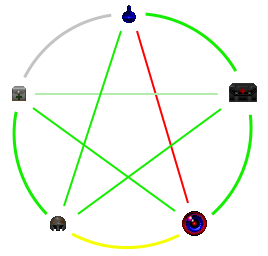

Important
This page contains lore-unfriendly info that is only really visible from code-diving. Not particularly good for immersion, so read at your own risk! Some information may also be slightly outdated, but for the most part it is up-to-date.
New to HD?
- Look down or select bandages (first weapon on slot 9) to see if you're bleeding. Looking isn't as reliable.
- Use medikits (in inventory or second weapon on slot 9) or bandages to stop bleeding.
- Hit the reload key to reload. Hold key on some weapons to keep the mag.
- Hit the unload key to take ammo out of a weapon. Same as above.
- Use items to pick them up, and enemies to melee them.
- Hold the jump key in front of a low ledge to climb over it.
- Hold the run/walk key to sprint. Use run/walk toggle to switch from walk and run.
- Hold the use/open door key to view all inventory.
- Bind Fire Mode, Secondary Reload, and Unload. Don't forget the mag manager, it will be your best friend.
Getting rid of fire
by Sledge
If you're on fire, stop, drop, and roll! (Waggle your mouse around like a madman, or spin in circles!) Consider binding a key to turn180 for this. [There is a cap on how much mouse movement affects fire.]
Weapon jamming
by Sledge
Your ZM66, Hunter shotgun, and Boss rifle can jam. For the ZM66, you'll need to remove the magazine (Unload or Reload), clear the jam (Press/hold Reload until the jam clears), and then insert a new mag before you can fire again. For the Hunter and Boss, cycle the action (The Boss might take a bit more elbow grease, so hold down that altfire) and you're clear to fire again.
Incapacitation
by ZikShadow
Incapacitation ("incap") was introduced in 424a and it happens if you managed to down the enemy, but haven't yet actually killed them, mainly only happens on humanoid enemies. This kind of stuff happens to you too, so it's a you-can-do-they-can-do sort of thing. Double tap and make sure the thing you just shot is dead. If it's still slightly moving, you can walk on top of them, or they haven't yet dropped their stuff, they're still alive.
Enemy Resurrection
by ZikShadow
There's a few ways a fallen enemy could get [resurrected]: Frag energy, healer imps, and archviles + curses.
1. Frag
Long name: Gretchenfrage. Those small green energy thingies you see flying around the map. Spawns from various demonic enemies in one way or another. Unless you're playing on the hardest difficulty, Frag doesn't respawn, it eventually runs out. Frag energy goes inside enemies, which then revives them. You can gib the bodies of mid to low tier enemies with the chainsaw or with enough firepower (no gibbing cacos above, pretty much), but it only really serves to slow down and make the Frag energy go to waste, they'll still be able to get back up if enough energy is put into them. If you drink/absorb things like blue potion/soul or megaspheres, you'll slowly emit friendly frag energy that might resurrect enemies on your favor, so it's not all bad.
2. Healer Imps
Healer imps are usually the smallest variants. As their name indicates, they resurrect fallen foes. Killing (and gibbing) them before anyone else might help keeping the fight in your favor.
3. Archviles
Archviles pick whole rooms back up, that's their strongest attack, really. If you managed to hurt them enough times to kill them (you'll know this happens when they burst into a confetti of yellow energy), they'll send a last hurrah in the form of a curse that'll randomly resurrect enemies around you a bunch of times until it dissipate, you'll know when it happens once you hear a distant laugh.
Encumbrance
by HexaDoken
There are three base values governing encumbrance. These are: the pocket space limit, the weapon pickup limit, and the "carry maximum". All of these three values are divided by the hd_encumbrance setting.
Both pocket space and weapon pickup limits are hard binary limits; you either hit them or you don't.
Pocket space limit is 600 blocks. Pocket items is all ammo not loaded into the weapons, and all usable inventory except HERP and the backpack. The encumbrance from pocket items counts towards the pocket limit. Once you reach the pocket limit, you can't pick up more pocket items.
Weapon pickup limit is 2000 blocks. Once your total encumbrance exceeds this limit, you will not be able to pick up additional weapons.
Carry maximum is not a hard limit, and can be breached. However, once you do so, you will begin to take penalties.
The base carry maximum is 400 blocks, but can be boosted by the following effects:
- A full stim dose gives +40 blocks. This bonus scales with how much of the stim dose remains in your body. You can have more than +40 blocks, but over 125% of the stim dose you are overdosed and take damage.
- Any amount of zerk gives +100 blocks. This bonus does not scale with how much zerk is left, and can technically be used to determine when you're out of zerk.
- Blues will give up to +150 blocks. If you have less than 150 points of blue, the bonus scales down. One potion is 144 blue, one sphere is 777 blue.
The breakpoints for changing the colour of the encumbrance indicator are as following: <120% of carrymax is green, 120-200% of carrymax is yellow, and >200% carrymax is red.
Below 100% carrymax, you only take extremely minor movespeed penalty(0.02% speed loss per 1% of carrymax).
If you are above 100% carrymax, your jump power is divided by carry percentage. So you jump at half strength if you're at 200% carrymax. Your jump strength is also your hop strength.
Above 100% carrymax, you take a penalty to your maximum speed. Whether this has an immediate effect on you actually depends on some factors.
Being over 100% carrymax caps your speed at 400% minus carry percentage, so 300% base speed and below. Normally, you will not immediately notice this difference, because of two factors:
The first is that sprinting only puts you at 280% speed(180% on Grimdark and Spooky), which means you can't even reach the cap immediately anyway. This is why the indicator goes yellow at 120% carrymax - at this point you're actually losing sprint speed.
However, your speed can be boosted by berserk. Zerk sprinting puts you at 420% base speed(270% on Grimdark and Spooky). Here, however, you will probably bump into another limit:
There is another speed cap imposed by wearing armour. Blue armour caps speed to 200%, green armour caps speed to 300%, and radsuit caps speed to 180% regardless of armour.
The only time you should STRICTLY care about being under 100% carrymax is if you are:
- Unarmoured
- Berserk-sprinting
- Not playing on Grimdark or Spooky.
Needless to say, not exactly a common situation. However, should you somehow find yourself in it, you will notice a SIGNIFICANT difference in speed at 99% carrymax and 100% carrymax. If, for some reason, you need to go stupefyingly fast, ditch your armour and your equipment.
In addition, blue armour wearers do not take an effective speed penalty until they are over 200% carrymax, though they do still take a jump power penalty. Grimdark and Spoky players likewise do not take a sprint speed penalty until they are over 220% carrymax, OR berserking.
Sidenote: while in the past there have been some cases where some items did not count towards your effective encumberance, those are pretty much entirely gone with the removal of one man army mode. Everything you have just counts.
The only exception that remains is that your selected weapon does not count towards the weapon stacking multiplier. This means that if you have more than one gun, having the heavier one in your hand will make you have slightly less encumberance than if you had the ligher one in your hands. However, the BASE encumberance of the weapon does not go anywhere, and the disparity from weapon stacks is going to be very minor compared to your total encumberance. As such, this isn't really worth concerning yourself about.
Encumbrance (Advanced)
by HexaDoken
Backpack weight is 70% of it's contents, but always at least 100 blocks.
Armour has 10% normal encumbrance when worn.
Values below assume you carry nothing else. Margin of error for everything ±1 block.
|
|
|
Stimpacks
by Sledge & Accensus
Stimpacks give a small boost to health when injected and increase health regeneration temporarily. Should you inject more than one at a time, you will overdose and die.
At absolute bare minimum, you should wait 90 seconds before injecting another stim into yourself after the first. You should be absolutely safe if you wait for 2 minutes, regardless of heart rate and injury.
Berserk a.k.a. Zerk
by Sledge
A single dose of zerk gives 4100 zerk. If you're over 4000, you have a chance of randomly tossing your weapon to the ground (Yep, that's what does it.) That wears off pretty quick from a single dose. Throughout the course of the zerk, you'll have an inhuman amount of mobility, health regeneration, and punching/throwing strength. You will also randomly throw your weapons pretty frequently, so be careful around ledges or with sensitive equipment.
If you're over 5000, however, you'll just start violently haemmoraging and bleed even faster than zerk can heal you. This isn't just some bleeding you can staple shut. You'll keep sprouting new holes until it goes back below 5000, and if you manage to survive this, you will have an insane amount of aggravated damage to deal with afterwards, so, don't do that.
However, timing is key. You'll notice that you randomly shoot your weapon, throw a punch, or just toss your entire gun while zerked. When you stop doing that, you have about 25% of a zerk dose left in your system, at which point it's "safe" although not advisable to potentially dose again without bleeding.
Unfortunately, that's something that happens randomly to begin with so it's not really a safe or reliable metric. There is no safe or reliable metric to tell how much berserk is left in your system.
Once your zerk hits 0, it suddenly "takes" a huge amount of zerk from you, depending on how many zerks you've used without letting it wear out.
When you're at negative zerk, it ticks upwards in the same way zerk ticks downwards normally. Every time it ticks upwards, it rolls a number for your heart rate, and if it's over a certain number, you start suffering rapid damage
That is completely RNG and there's nothing you can do outside of supernatural healing to mitigate it. Just find a safe place to sit and don't do anything strenuous like running or jumping.
Dosing again while you're in your recovery withdrawal actually does influence how much zerk will be in your system. If you dose immediately after hitting withdrawal, your berzerk will be about 20% shorter, which also means (happily) that you won't risk dropping your weapon or bleeding through every hole in your body.
It'll be a bit shorter, but there's no drawbacks besides putting yourself back in the zerk hole.
Blues
by HexaDoken
Blue potions contain 12 sips giving 12 points each, for a total of 144 points per potion. Both soulspheres and megaspheres give you 777 points each in one go. There is no maximum blues, you can keep chugging them forever.
Blues provide the following effects:
- Increase carry capacity by 1 per point of blue, to a maximum of +150 base capacity. (Normal capacity is 400; maximum blue bonus gives you +37.5% capacity.)
- Completely shuts down stimpacks. Each stimpack will drain 5 points of blue and have no other effect other than jacking your heartrate up just slightly.
- Boosts your blood regen by x144. On minor wounds you will literally regenerate blood faster than you lose it. This effect is completely free and is active in full force as long as you have even one point of blue.
- Provides protection from heart attacks. Has a very small chance to drain a point when it actually triggers. You become mostly immune to regular heart attacks, but zerk comedown messes your heart up so bad blues just can't keep up with it.
- Over time, closes your wound. Turns an open wound or an unstable wound into a treated wound, at 1 point per wound. If you have both open and unstable wounds, prioritizes open wounds.
- Over time, slower than the previous, removes your permanent damage. If you have old wounds or burns or aggro, expends one point to fix one old wound, one burn, and one aggro. This means that the total cost of fixing all your old wounds is the total amount of the highest wound type; i.e. 20 old wounds, 10 burns and 5 aggro will cost 20 blues to fix, same as just 20 old wounds and nothing else.
- Every 60 heartbeats rolls a 1/8 chance to cause a random effect. This random effect has 50% chance to be a mass heal, 25% chance to be a revive conversion and 25% chance to be a live conversion:
- Mass heal heals every living being in a 12 meter radius from you, including yourself. On just you and nobody else, this will also close 20 wounds and remove 20 aggro. This will also rarely spawn an enemy frag shard. This costs a fixed 20 points.
- Revive conversion has a chance to revive any corpse in 12 meter radius as a friendly ally, as long as their max health is less (not equal) than 400. This costs 20 points +1 for every enemy actually revived.
- Live conversion has a chance to convert any living enemy in 12 meter radius to your friendly. Again, max health needs to be less (not equal) than 400. This costs 20 points +2 for every enemy converted. Note that you do not actually have to have enough points to pay the full price of a random effect. As long as you have even one point, it can trigger in full force. You can't have negative blues, so you just pay less for the same effect.
Finally, if you have blues and a fully active blursphere (sphere + taint), you will suffer blue/blur annihilation. The blue count affects how fast this process goes - the more blues you have, the faster you will burn. Each "tic" of burn costs you 15 blues, generates 1 aggro, and has a chance to remove the taint, effectively putting the blursphere on pause. The higher the sphere level, the lower the chance of the taint being removed. If the taint is removed, the process stops.
Crits & Armor
by Sledge
Shot placement matters! Hitting someone in the central column or, better yet, the head, tends to do more damage than grazing them on the side. Some enemies (Helmet jackboots, hostile marines, chaingunners, and nazis) often wear armored vests. Their head and legs are less-well protected, but even hitting them in the vest will stagger them briefly. Either carry a heavy gun, or place your shots carefully!
Even your fist is able to score a headshot, which will disorient anything you hit, even through a shield. Yes, including cyberdemons.
Human Enemies
by Caligari87
Zombie Stormtrooper
Slow-moving, dumb, inaccurate.
- Standard zombie, ZM66 (full-auto, burst)
- Standard zombie, ZM66 (semi-only)
- Standard zombie, SMG
- Shellshade (ghost zombie, hard to kill)
- Pistol zombie (Freedoom only)
Jackboot
Fast-moving and aggressive, fast-aiming and slightly more accurate but not by much. Dangerous in melee.
- Red/black zombie, Pump Shotgun
- Red/black zombie, Slayer
- Black helmet marine, ZM66 (burst)
Marine
Fast moving and aggressive, slow aiming but highly accurate. Extremely deadly in melee.
- Green helmet marine, ZM66 (all modes) with underbarrel grenade launcher, pistol
- Blue helmet marine, Shotgun, "blooper" grenade launcher, pistol
- Grey helmet marine, SMG, grenade launcher, pistol
- Brown helmet marine, Rocket launcher, pistol
Shields
by Eric
Shields completely block most forms of damage until they are depleted. They constantly regenerate one point per tic (35 per second). Fire is one of the few exceptions which can inflict damage through shields, but Hell Knights, Mancubi, Barons, and Masterminds cannot be killed by fire alone, no matter how hot they burn. Their shield must be broken first, but the fire will quickly finish its work after that.
While bullet damage calculations against health are heavily randomized, shield damage is almost completely static. Outside of a couple instances of differing muzzle velocities, deviations only occur in melee, explosive, and energy attacks.
|
|
Chainsaw causes wounds straight through a shield, which can kill bleeding enemies incredibly quickly but will have no special effect on Arachnotrons or bosses. Explosive weapons have somewhat variable shield damage due to shrapnel. The energy weapon numbers are very loose estimates or outright guesses based on code. More specific numbers from more code-savvy people than myself would be great.
Doorbusting
by Sledge
Most of your arsenal is capable of destroying geometry in the map, for example, doors, small cover, and things that act like them, including monster closet trap walls. You cannot break anything that leads off the edge of the map!
Obviously, some things are better than others, or are designed to do this, like the doorbuster, but there are very few problems that cannot be solved with excessive firepower. Simply shooting a door with enough bullets can break it eventually. You can even use your boots to do so, although this is a pinch better with zerk.
Generally while trying to bust a door or wall, you want to have your angle be as perpendicular to the door as possible. Try to hit it straight on.
Certain monsters, such as Cyberdemons and Cacodemons are also capable of busting geometry with their attacks, so be careful!
Try it out on doors of varying size, especially exit doors, so you can get a feel for it.
Penetration
by Sledge
9mm and buckshot can do some extremely minor penetration through, say, a corner, or a "glass" window.
4mm will penetrate thin walls and soft targets with some reliability, and 7mm will very reliably punch through a significant amount of wall, or go straight through an enemy.
A Bronto bolt will punch clean through 2 man-sized targets and still explode on anything behind them.
This can be used to foil ambushes, if you hear something through a wall, or know that it's coming.
Boss Rifle Handling
by Caligari87
As shooting is dictacted by combat situations, the main thing the player can control is chamber manipulation. The best way to keep the Boss clean as long as possible is by racking/manipulating the chamber as little as possible. Some suggestions:
Never manually load or unload a single round to or from the chamber. In addition to the dirt possibly introduced by open/closing the chamber, manual loading/unloading stacks an additional equal chance to either add or remove some dirt. The rules of probability suggest this is almost never a worthwhile choice.
On your last round, do not rack the chamber until a new mag is loaded. This saves one racking cycle worth of possibly-added dirt.
Avoid rapid fire. A warm chamber is subject to metal expansion, and will stick *worse* if (when) it locks up. Letting the gun cool as much as possible after a shot will reduce frustrating lockups.
For the factory chamber tolerances, cleaning is recommended every 3-5 clips, perhaps more if needed. For the custom chamber much less cleaning is required, but some gentle TLC every 8-10 clips is a good idea unless it's clearly locking up a lot.
Boss Rifle Dirtifying
by Caligari87
The following is the current probabilities for the Boss Rifle to accumulate dirt (jamchance) due to various actions. The +/- amounts reflect the increase or decrease in dirt (jam chance percentage out of 100). In other words: +5 dirt is a +5% probability of jamming.
Some of these chance percentages are rounded up so may not add to 100% exactly. These numbers apply to the tight chamber setting. The loose chamber setting uses the same probabilities but reduces the dirt amounts considerably.
| Firing | Close Chamber | Manually Load/Unload | Cleaning | ||||
| 50% | No change | 57% | No change | 67% | No change | 25% | -3 |
| 40% | +1 | 15% | +1 | 17% | +1 | 50% | -5 |
| 10% | -1 | 15% | +2 | 17% | -1 | 25% | -(8 to 16) |
| 15% | -1 | ||||||
Blursphere
by Eric & Sledge
While cloaked, the blursphere will passively inflict bleed on any valid targets in a radius around you. This is a constant effect, it's not like the random outbursts of fire or infighting. cloaking also protects you from balefire, scaling with your blursphere's current level, at high levels you take almost no HP damage or wounding from balefire hits.
While staring at an enemy to burn them to death, they'll also be mostly immobilized, so getting up close and punching them while you burn them is relatively safe.
You can quickly toggle the blursphere off and on again to cancel the decloak timer that happens when you fire a weapon or take fire damage. This has a downside of leveling the blursphere as quickly as possible, but at lower levels is well worth using to cover yourself while reloading.
This isn't blursphere-specific, but burning shielded enemies has some odd rules to it: if it can bleed and has a shield, it can't be killed by fire until the shield is broken.
You can hold one for about 54 minutes without using it before it reaches level 8 and becomes undroppable. You get about 13 minutes of active use before it reaches that point.
More precise numbers can be found here.
|  |
|
||||||||||||||||